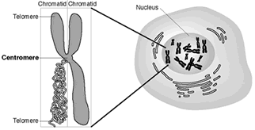
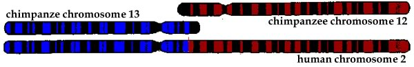

Because of mutation, a gene can exist in different forms. These alternative forms of a gene are known as alleles.
The complete set of alleles contained within an organism is known as its genotype.
In asexual organisms, all of the different alleles are linked together evolutionarily. When the organism reproduces, all of the DNA (and all of the alleles are replicated) and pass together, except for those variations introduced by mutation, to their offspring.
This means that all of the alleles within the an asexual organism share a common fate. They are inherited together and so evolve together.
A lethal mutation in one gene leads to the extinction of all.
If the effects of a deleterious mutation are not immediately lethal, these effects may be ameliorated by mutations in other genes - the genome adapts as a whole and competes with other genomes.
Even in asexual organisms there are ways for alleles to escape their home genome and their linkage to other genes. One is the process of horizontal gene transfer.
Click the image to learn about bacterial resistance to antibiotics
Remember Griffith's observations on bacterial transformation? That was an example of horizontal gene transfer.
The ability to transfer genetic information from one cell to another can play a key roll in biologic communities. The rapid spread of antibiotic resistance is due in large part to the horizontal transfer of resistance genes.
On the other hand, horizontal gene transfer can also lead to selfish behaviors; for example a genetic element that is no longer condemned to remain associated with its host's genome can replicate at the host's expense and then change hosts (a parasitic relationship)!
A piece of DNA may evolve to facilitate its own spread from organism to organism via horizontal gene transfer. It is commonly thought that viruses have their origins in such selfish genetic elements. Most viruses are obligate intracellular parasites
There can be a serious conflict between the "interests" of a selfish genetic element and its host.
The appearance of selfish genetic elements will in turn lead to a selective pressure to suppress their replication (because their replication can lead to mutations, requires energy, and is generally not good for the organism).
The genomes of organisms are littered with inactivated remains of selfish genetic elements, greater than 40% of the human genome is composed of such parasitic DNA.
Much of the human genome that is not obviously derived from these parasitic sequences may be derived from such sequences that have been mutated beyond recognition.
Click the figure to learn about transposable (moveable DNA) elements
At the same time, processes like horizontal gene transfer allow alleles to move around, to escape from their original host and form new combinations with alleles from other organisms (which works because all organisms use the same genetic code!) Information can be shared between lineages (as in the spread of multidrug resistance and other traits).

Click the figure to learn about the advantages of sexual reproduction
There is a second process by which combinations of alleles are shuffled and new alleles created to form new genomes, it is known as sex.
The process of sexual reproduction involves two organisms which cooperate to produce a new organism. For such cooperation to evolve, each organism must benefit (reproductively) from the interaction.
This involves what is known asinclusive fitness. One obvious benefit of sexual reproduction is that it generates new combinations of alleles - it "liberates" (and enhances) genetic variation.
Sex in eukaryotes involves two processes, meiosis and syngamy.
Sexual organisms exist in haploid and diploid states. In the haploid state, they have a single (1N) set of chromosomes and so a single allele of each gene.
In the diploid state, they have two sets (2N) of chromosomes, one derived from each parent; they therefore have two alleles of each gene.
The maternal and paternal sets of chromosomes are homologous; they each contain the same set of genes in the same sequence along their length.
They may differ, however, in which allele is present at each gene position. The position of a gene within a chromosome or genome is known as its genetic locus.
Click the figure to view the human chromosome viewer
If mitosis and cytokinesis occur accurately, each daughter cell ends up with the same number of chromosomes as the parent cell.
If the parental cell is normal, that is it contains the exact number of chromosomes typical for the species, it is said to be euploid, which means true number.
If there is a defect in mitosis, daughter cells can inherit more or less than the euploid number of chromosomes; such a cell is said to be aneuploid.
Aneuploid cells are abnormal – such cells are often found in cancers. In the context of embryonic development, most aneuploids are lethal. Some human aneuploid embryos survive, trisomy-21 (Down's syndrome) is an example.
Sexual reproduction is associated with the process of meiosis - a modified form of mitosis. Meiosis occurs only in diploid cells, and produces haploid progeny.
The haploid (1N) products of meiosis are known as gametes.
During meiosis, homologous chromosomes align with one another in a process known as synapsis. Each maternal chromosome aligns with its homologous paternal chromosome; this alignment is generally exact to the base pair.
Syngamy, which is also known as fertilization, mediates the transition from haploid to diploid.
During syngamy, two haploid cells fuse. Cell fusion is followed by nuclear fusion, leading to the formation of a diploid cell. This diploid cell has two sets of chromosomes and so is 2N.
A number of plants, such as the mosses, spend a significant amount of their organismic life cycle in the haploid state. During this haploid phase, the organisms are known as gametophytes.
In most plants (like most animals),the gametophytic stage is quite short and contained within the diploid form, known as a sporophyte (in plants).
Gametes that do not undergo syngamy shortly after they are formed or activated, die.
When gametes are different sizes, the larger are called eggs and the smaller sperm.
Organisms that produce sperm are male, those that produce eggs are female.
In some species, an organism can produce both sperm and eggs simultaneously, such an organism is known as a hermaphrodite, after the Greek gods Hermes and Aphrodite.
Sexual identity is not necessarily fixed. There are also organisms that can change sex over time, these are known as sequentialhermaphrodites. (short video).
In a number of fishes, for example, sexual identity can be influenced by social interactions. In the absence of a male, the largest (dominant) female will become male, making sperm rather than eggs. This is a trait that has originated independently, multiple times
Click the image to learn more about sequential-hermaphrodism
During meiosis homologous, replicated maternally and paternally-derived chromosomes align with one another (synapsis). Once aligned the homologous (maternal and paternal) chromosomes undergo crossing over.
Video tutorial: Mitosis and meiosis
The first meiotic division divides the chromosomes randomly from the original diploid set – some are maternal, some paternal.
Humans have 23 pairs of chromosomes.
The process of independent chromosome assortment can produce 223 different gametes, a rather large number.
The end result is that the paternal and maternal alleles are no longer permanently inherited together. [link toflash applet]
In addition, paternal and maternal chromosome are shuffled, and the alleles alone any one chromosome are also shuffled, so that new combinations of paternal and maternal chromosomes are generated. The order of genes is not changed, but the pattern of alleles often is.
Each chromosome usually undergoes multiple crossing over events.
[Try the crossing overapplet]
The end result is the generation of chromosomes with new allelic combinations.
The physical process of crossing over holds the two homologs (DNA molecules) together until they are separated at meiosis I.
Together, independent assortment and recombination produce vast numbers of genetically distinct gametes.
This process explains why each sexual organism is genetically unique.
An obvious benefit of sexual reproduction is the appearance of large amounts of genomic variation with each new generation.
Another is the elimination of deleterious mutations from the population.
In asexual organisms, each lineage is distinct and must "stumble" upon evolutionary novelty on its own. Alleles are changed one by one and tested in the same way. In a similar manner, there is no ready way to get rid of deleterious mutations except to die.
This accumulation of mutations in asexual organisms is known as Muller's ratchet (that is right, the same Muller as the person responsible for Muller's morphs.)
Meiotic recombination generates new chromosomes. Some have more deleterious mutations, some fewer. Organisms with more deleterious mutations are likely to die earlier than those with fewer -- the population as a whole "sheds" deleterious mutations.
During S phase of the cell cycle, each chromosome replicates.
The replicated chromosomes (sometimes known as chromatids), remain attached to one another at a region known as the centromere.

During mitosis, the attachment between chromatids is broken and one chromatid is segregated to each daughter nuclei.
During meiosis, the centromeres of the replicated chromosomes do not separate until the second meiotic division.

Click the image to learn more about the chromosomal location of some human diseases
Occasional mutations will flip a stretch of DNA within a chromosome, producing an chromosomal inversion.
Sometimes, a chromosome may break and then be rejoined incorrectly to another chromosome – this is known as a chromosomal translocation.
Such chromosomal rearrangements complicate synapsis and can lead to a failure of meiosis, and hence sterility.
The accumulation of chromosomal rearrangements is one mechanism use to establish reproductive isolation during the formation of new species.

Questions to answer
Questions to ponder